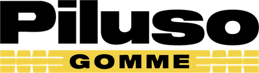
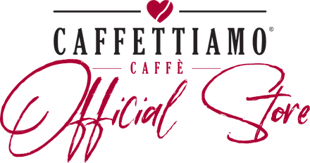
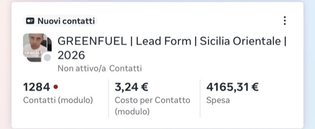
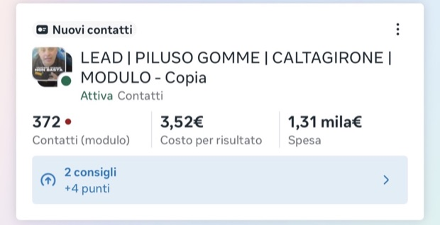
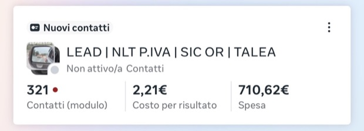
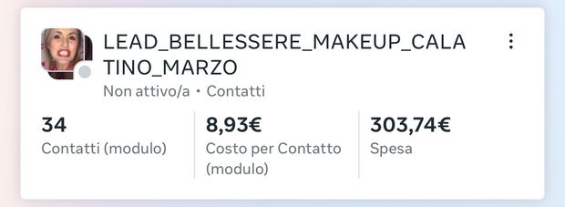
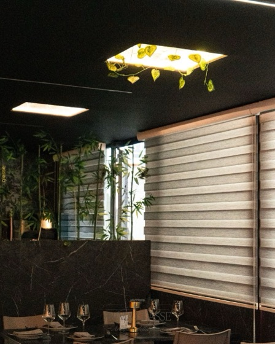

Acquisisci nuovi clienti con la Customer Generation
Implementiamo il digital advertising nella tua azienda con un unico obiettivo: riempire il tuo negozio, la tua agenda, portare richieste per i tuoi servizi o prodotti da nuovi potenziali clienti consapevoli.
Se lavori in uno di questi settori, possiamo lavorare insieme:
Attività locali
- Ristorazione e locali
- Bellezza e benessere
- Sport e fitness
- Auto e moto
Aziende
- Casa, arredo ed edilizia
- Energia e impianti
- E-commerce
Professionisti
- Salute e studi professionali
- Immobiliare, finanza, assicurazioni
- Altri servizi e professioni
Alcuni dei nostri partner che usano questo metodo per acquisire costantemente nuovi clienti paganti:


Che attività hai?
Lo stesso settore, prima e dopo

GreenFuel, fotovoltaico, Sicilia orientale. Pagavano 20 € per ogni richiesta. Oggi ne arrivano a 3,24 €. Con lo stesso budget, sei volte i contatti: 1.284 richieste con 4.165 €.
Lo stesso settore, numeri veri

Piluso Gomme, gommista. 372 contatti a 3,52 € l’uno, in un bacino locale. Non un marchio nazionale: un’officina di paese.
Lo stesso modo di vendere

Talea, noleggio a lungo termine. 321 partite IVA a 2,21 € l’una. Un servizio che non si compra da soli: si chiude al telefono, dopo un preventivo. Come il tuo.
Lo stesso settore, numeri veri

Bellessere Service, centro estetico. Una campagna sul makeup, nel Calatino: 34 richieste a 8,93 € l’una. È una delle quattro che abbiamo girato per loro.
Un centro nuovo, pieno in un mese
Kiran Club, Caltanissetta. Lancio di apertura: contenuti, reel e campagne per un centro sportivo che partiva da zero clienti. Oltre 1.000 iscritti attivi nei primi trenta giorni.
Un ristorante sempre pieno

Prima Classe, Piazza Armerina. Un ristorante costantemente sold out grazie al nostro lavoro: shooting in sede, contenuti e campagne li facciamo noi.
Il metodo non cambia col settore
Cambiano l’offerta, il pubblico e le creatività. Il modo di costruirli e di correggerli ogni settimana è lo stesso ovunque.
fotovoltaico
gommista
noleggio lungo termine
promozione locale
centro estetico
Cinque mondi che non si somigliano per niente: pannelli solari, pneumatici, noleggio auto, caffetteria, estetica. Stesso impianto, risultati veri in tutti e cinque.
Non sono listini. È quello che è successo in quelle zone, con quelle offerte, in quei periodi.
Oggi, che tipi di investimenti mensili puoi fare per il marketing del tuo business?
Le cifre riguardano budget pubblicitario e gestione. Lavoriamo da 900 € in su.
Sei in buone mani
Stai parlando con un’agenzia che in questo preciso istante lavora con oltre 35 partner esattamente come te.
Gestiamo centinaia di migliaia di euro in campagne pubblicitarie, con un obiettivo solo: trasformare il tuo investimento in un ritorno reale e in più fatturato per la tua azienda.
Avete una persona incaricata di interagire immediatamente con le richieste massive che arriveranno?
Segretaria, team commerciale, responsabile di sala, receptionist.
È la domanda che decide se una campagna diventa clienti o resta un elenco di nomi.
I primi 5 minuti valgono tutto il resto
Chi ha appena chiesto informazioni sul tuo prodotto, sul tuo servizio o vuole prenotare è caldo adesso, non stasera. Le ricerche di James Oldroyd sui tempi di risposta ai contatti, riprese dall’Harvard Business Review, misurano quanto costa aspettare.
Più tempo passa fra la richiesta e la prima risposta, più il contatto si raffredda.
Oggi come arrivano i tuoi clienti da te?
Il passaparola non lo decidi tu
Funziona finché gira. Ma non ha un rubinetto: non puoi aprirlo il mese in cui l’incasso cala, e non puoi chiedergli di portarti il doppio dei clienti a settembre.
I clienti che hai oggi domani possono scegliere un altro. Basta che apra qualcuno più vicino, o che un conoscente ne consigli un altro, e quel flusso si sposta senza che tu te ne accorga.
Fare lead generation con noi significa avere la certezza di far arrivare il tuo lavoro ai clienti giusti ogni giorno, senza aspettare che qualcuno parli di te.
La vetrina ti porta chi passa, non chi ti serve
Il tuo bacino è largo quanto la tua strada. E chi passa davanti non è detto che sia il tuo cliente: è solo qualcuno che stava andando da un’altra parte.
Basta una stagione storta, dei lavori in corso o un’apertura più vicina al flusso e il flusso cambia strada. Tu non puoi farci niente: la posizione non la sposti.
Con la lead generation non aspetti chi passa: scegli tu chi deve vedere la tua attività e in quale zona, e lo raggiungi ogni giorno.
Like e visualizzazioni non sono clienti
Avere like, commenti o un video virale non significa avere più clienti. Non ti dice quanti clienti nuovi ti ha portato il digitale, e non ti dice quanto ti è costato ognuno.
Significa solo dipendere dalle piattaforme e dai trend del momento: cambia l’algoritmo, cambia la moda, e il mese dopo riparti da zero.
Il nostro è un lavoro completamente tecnico: campagne costruite per portare richieste, non interazioni, con un costo per contatto che sai leggere ogni giorno.
Su Google raccogli la domanda, non la crei
Intercetti solo chi ti sta già cercando, adesso, con le parole giuste. È un bacino limitato, conteso da chiunque altro paghi per le stesse parole, e quando le ricerche calano calano anche i contatti.
Tutti quelli che sarebbero i tuoi clienti ma non ti stanno cercando in questo momento, non ti vedono.
Con le campagne arrivi anche a chi non ti cerca ma è esattamente il tuo cliente: la domanda la costruisci tu invece di aspettarla.
Avere campagne attive non è avere un sistema
La domanda vera è un’altra: sai quanto ti costa un contatto, quanti diventano clienti e da quale inserzione sono arrivati?
Se la risposta non è un numero, stai spendendo al buio e lo scoprirai a fine mese.
Noi partiamo da lì: costo per contatto, da quale annuncio, quanti diventano appuntamenti. Poi si ottimizza su quello.
È la risposta più onesta, ed è anche la più cara
Se non sai da dove arrivano i tuoi clienti, non sai cosa sta funzionando. E quello che non sai di aver fatto bene non puoi ripeterlo, né aumentarlo.
Ogni mese riparte da zero, e ogni euro speso è una scommessa.
La prima cosa che mettiamo in piedi non è una campagna: è la misurazione. Da lì in poi ogni scelta ha un numero sotto.
Se iniziassimo un percorso insieme oggi stesso, quale sarebbe il principale problema che vorresti risolvessimo al tuo business?
Ok, secondo noi potresti essere il partner perfetto per iniziare un percorso insieme, già da oggi.
Ora dicci: avremmo il piacere di parlare con…
Oggi potrebbe iniziare il tuo percorso con noi
La tua candidatura è andata a buon fine.
Prenota la tua call su Meet: 45 minuti, scegli tu quando.
Apriamo martedì, mercoledì e giovedì pomeriggio. Se trovi uno slot già occupato, a quell’ora siamo al telefono con un altro partner.
- Ci guardiamo in faccia su Google Meet, nel giorno e nell’ora che hai scelto.
- Facciamo un check della tua situazione: come arrivano oggi i tuoi clienti e dove si perde il lavoro.
- Decidiamo insieme se e quando iniziare. Senza giri di parole: se non siamo noi la risposta giusta, te lo diciamo.
Prenota solo se le decisioni per la tua azienda le prendi tu. Se ci sono dei soci, venite insieme: così non ci sono cose da rispiegare dopo.
Preferisci sentirci subito?